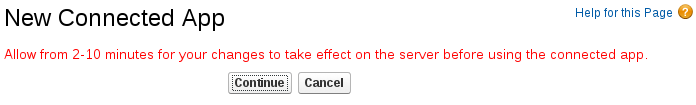

Connecting to Salesforce
In an integration, to connect to Salesforce, you must register your {prodname} environment as a Salesforce client application. This authorizes {prodname} to access Salesforce. With registration in place, you create a Salesforce connection, which you can then add to any number of integrations. For details, see the following topics:
Registering {prodname} as a Salesforce client application
In an integration, to connect to Salesforce, the first thing you must do is register your {prodname} environment as a client application that can access Salesforce. This lets you create any number of integrations that connect to Salesforce. In other words, you need to register a particular {prodname} environment with Salesforce only once.
In each {prodname} environment, there can be only one registration of {prodname} as a Salesforce client application. However, while each Salesforce connection uses the same registration, it can use different user credentials.
You are logged in to {prodname}.
-
In {prodname}:
-
In the left panel, click Settings.
-
On the Settings page, near the top, to the right of the callback URL, click
 to
copy the callback URL for your {prodname} environment to the clipboard.
You will need this URL toward the end of this procedure.
to
copy the callback URL for your {prodname} environment to the clipboard.
You will need this URL toward the end of this procedure. -
Click the Salesforce entry to display the Client ID and Client Secret fields.
-
-
In another browser tab, log in to your Salesforce account and follow the steps below to create a connected app. These instructions assume that you are using the Salesforce Classic user interface. To switch from the Salesforce Lightning Experience interface, click your profile icon and select Switch to Salesforce Classic. For additional information, see the Salesforce documentation for Create a Connected App.
-
In Salesforce, in the upper right, click Setup.
-
In the left panel, select Build > Create > Apps.
-
Scroll down to Connected Apps and click New.
-
Enter the required information and then select Enable OAuth Settings.
-
In the Callback URL field, paste your {prodname} URL, which you copied at the beginning of this procedure. For example:
https://app-proj912876.7b63.{prodnameinurl}.openshiftapps.com/api/v1/credentials/callback. -
For OAuth Scopes, add:
-
Access and manage your data (api)
-
Allow access to your unique identifier (openid)
-
Perform requests on your behalf at any time (refresh_token, offline_accesss)
-
-
Select Configure ID token and then Include Standard Claims.
-
Scroll down and click Save.
-
Scroll up to see that Salesforce indicates a short wait: 
-
Click Continue.
-
Copy the consumer key that Salesforce provides.
-
-
Return to your {prodname} Settings page and paste the Salesforce-provided consumer key into the {prodname} Salesforce Client ID field.
-
Return to Salesforce and copy the consumer secret that Salesforce provides.
-
Return to your {prodname} Settings page and paste the Salesforce-provided consumer secret into the {prodname} Salesforce Client Secret field.
-
Click Save.
-
Click the Salesforce entry to collapse it.
Creating a Salesforce connection
To create an integration that accesses data in Salesforce, you must first create a Salesforce connection. After you create a Salesforce connection, you can use it in multiple integrations.
-
You are logged in to {prodname}.
-
{prodname} is open in a web browser.
-
You must have already registered your {prodname} environment as an application that can access Salesforce.
-
You added the Salesforce client ID and client secret that you received after registration to the {prodname} Settings page.
Be sure to wait 2 - 10 minutes after registering your {prodname} installation as a Salesforce client before you try to create a Salesforce connection.
-
In {prodname}, in the left panel, click Connections to display available connections.
-
Click Create Connection to display the available connectors. A connector is a template for creating one or more connections.
-
Click the Salesforce connector.
-
Click Connect Salesforce to display a Salesforce authorization page. You might need to log in to Salesforce before you see the authorization page.
If Connect Salesforce does not appear, then your {prodname} environment is not registered as a Salesforce client application. See Registering {prodname} as a Salesforce client application. When you try to create a Salesforce connection and your {prodname} environment is not registered as a Salesforce client application, then {prodname} displays multiple fields that prompt for authorization information. While you can create a Salesforce connection by entering values in these fields, it is not recommended.
The following error indicates that Salesforce does not have the correct {prodname} callback URL:
error=redirect_uri_mismatch&error_description=redirect_uri%20must%20match%20configurationIf you get this error message, then in Salesforce, ensure that the {prodname} callback URL is specified according to the instructions in Registering {prodname} as a Salesforce client application.
-
Click Allow to return to {prodname}.
-
In the Name field, enter your choice of a name that helps you distinguish this connection from any other connections. For example, enter
SF Connect 1. -
In the Description field, optionally enter any information that is helpful to know about this connection. For example, enter
Sample Salesforce connection that uses my Salesforce login credentials. -
Click Save to see that the connection you created is now available. If you entered the example name, you would see that SF Connect 1 appears as a connection that you can choose to add to an integration.
Adding a Salesforce connection to an integration
In an integration, you can connect to Salesforce in the middle of a flow or to start or finish a simple integration. To do this, add a Salesforce connection to the integration.
-
You created a Salesforce connection.
-
You are creating or updating an integration.
-
{prodname} is prompting you to choose a start connection, or to choose a finish connection, or to add to the integration.
-
If you are adding to the Salesforce connection to the middle of a flow, click the plust sign where you want to add the connection. Skip this step if {prodname} is prompting for a start or finish connection.
-
Click the Salesforce connection that you want to add to the flow. When the integration uses the connection that you select to connect to Salesforce, {prodname} uses the credentials defined in that connection.
-
Select the action that you want the selected connection to perform. Each Salesforce connection that you add to a flow performs only the action you choose.
-
Specify the Salesforce object that the action operates on, for example, it might be a contact, lead or price book entry. Click in the Object field to select from a list of Salesforce objects or enter the name of the object.
-
Click Next to add the connection to the flow.